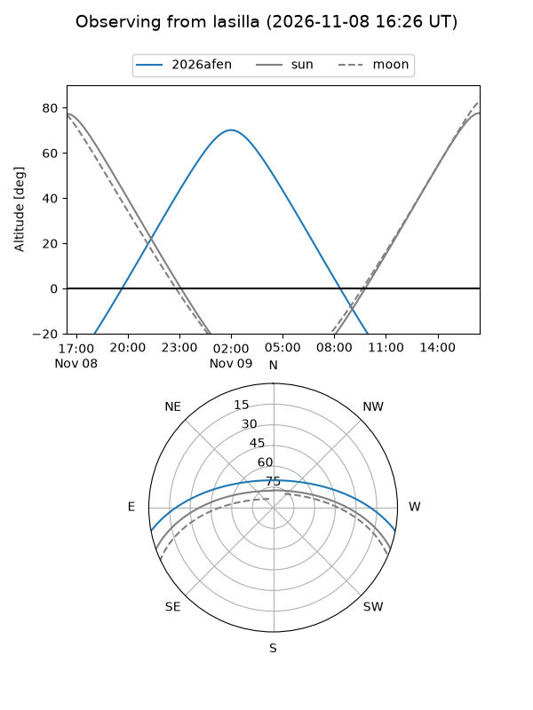
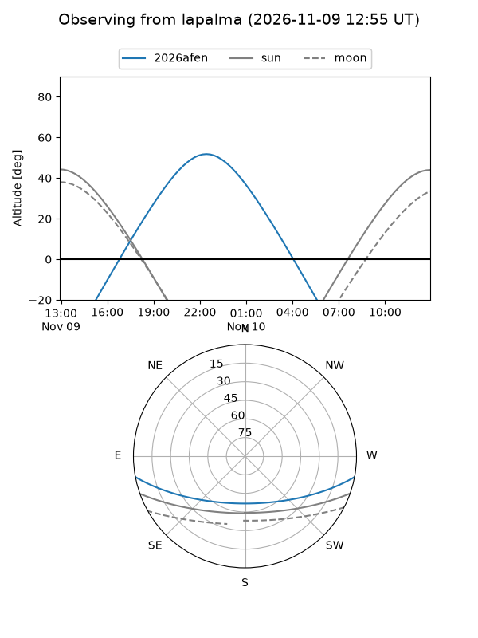
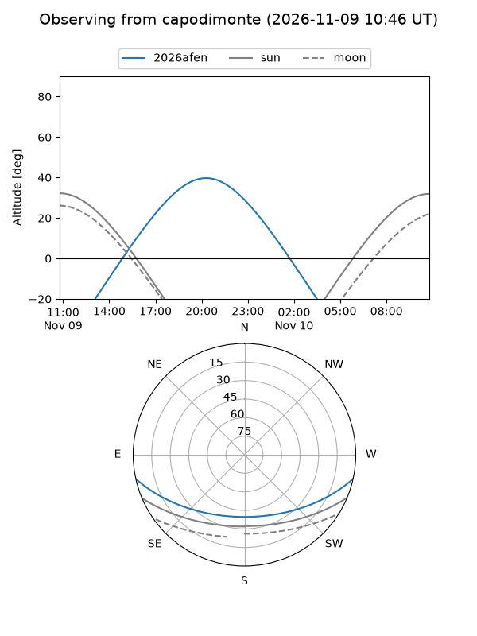
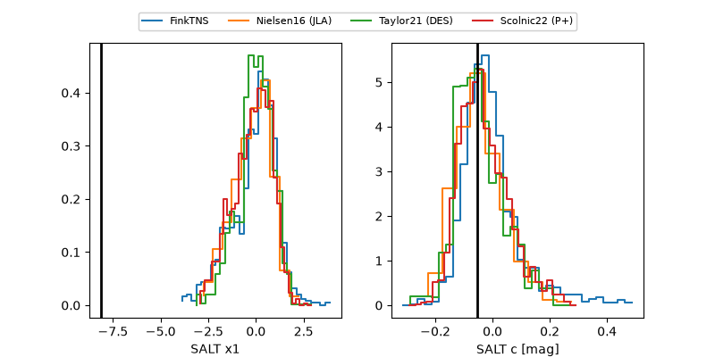

2026afen
Target 2026afen at 2026-11-09 07:25
Aliases and brokers:
FINK-ZTF: ztf.fink-portal.org/ZTF26aceacui
Lasair-ZTF: lasair-ztf.lsst.ac.uk/objects/ZTF26aceacui
ALeRCE-ZTF: alerce.online/object/ZTF26aceacui
YSE-PZ: ziggy.ucolick.org/yse/transient_detail/2026afen
TNS name: wis-tns.org/object/2026afen
Direct TNS query: direct search
alt names
ZTF26aceacui (ztf,fink_ztf)
2026afen (tns,yse)
PS26jtu (panstarrs)
Coordinates:
equatorial (ra, dec) = 7.1917,-9.58259
equatorial (HMS+DMS) = 00:28:46.02,-09:34:57.34
galactic (l, b) = (104.9071,-71.65651)
Flags:
peak dt: +5.0
Photometry:
last ztfg=20.08, ztfr=19.58
2 ztfg, 6 ztfr detections
Lightcurve
Visibility



Additional plots
